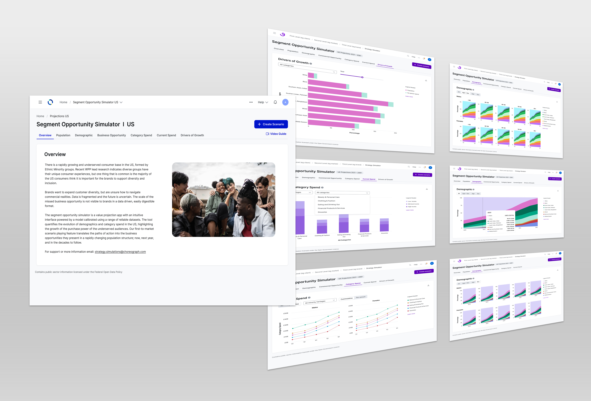

B2B Product Design
Segment Opportunity Simulator
A strategic tool designed to help teams visualize market opportunities and make data-driven decisions. This platform transforms complex business intelligence into actionable insights through intuitive interfaces and real-time scenario modeling.

B2B Product Design (Agentic)
AI Research Assistant
An innovative approach to autonomous systems that empowers users to collaborate with AI agents. This design framework balances automation with human oversight, creating seamless workflows that adapt to user needs and business objectives.

Data Visualization · Parsons MS Thesis
Louis Armstrong in Data and Song
An interactive exploration of Louis Armstrong's musical legacy through data visualization. This thesis project combines archival research with modern design to reveal patterns in his performances and recordings across decades.

AI/ML
Machine Learning
A collection of machine learning experiments and visualizations that make complex AI concepts accessible. This project explores neural networks, pattern recognition, and predictive models through intuitive visual interfaces.

Data Visualization · AI Product
Silhouette Art of Early America
An AI-powered archive that brings 18th and 19th century silhouette portraits into the digital age. This project combines computer vision with historical research to create an interactive database of over 1,100 artworks.

B2C Product Design
HISTORY Vault
A premium streaming service offering thousands of commercial-free documentaries and historical content. The platform delivers an immersive viewing experience optimized for history enthusiasts across web, mobile, and connected TV devices.

B2C Product Design
Lifetime Movie Club
A subscription streaming platform dedicated to Lifetime's extensive movie library. This mobile-first design provides seamless access to hundreds of films with personalized recommendations and curated collections for devoted fans.


Data Visualization · Exploration
Women & Climate Change